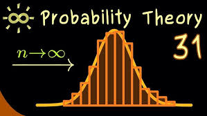

Preparing Students for the Workforce
September 20, 2025 by Kye Brathwaite
The University of the West Indies (UWI) computing degree provides students with a strong foundation in programming, algorithms, and system design. Students gain practical experience through projects and labs that simulate real-world challenges in the tech industry.
Graduates are generally well-prepared for the workforce, having developed problem-solving skills, teamwork experience, and exposure to current technologies. However, some industry-specific skills may require additional training after graduation.
The Law of Large Numbers
September 18, 2025 by Kye Brathwaite

The Law of Large Numbers is a fundamental concept in probability that states that as the number of trials increases, the average of the results will get closer to the expected value. It is widely used in statistics, finance, and scientific experiments to predict outcomes over repeated trials.
For my computing project, I simulated thousands of coin flips using Python. I plotted the results to show how the proportion of heads and tails converges to 50% as the number of flips increases. This project helped me visualize the Law of Large Numbers in action and reinforced my understanding of probability, data collection, and graphing in programming.